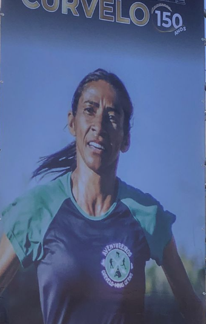

Claudete Maria de Souza Silva, nascida em Inimutaba e radicada em Curvelo (MG), é considerada a maior atleta da história da cidade. Iniciou no atletismo aos 25 anos e rapidamente se tornou um dos maiores nomes das corridas de rua do Brasil. Construiu resultados impressionantes, como 35:22 nos 10 km, 2° lugar geral na Maratona de Porto Alegre (02:50), 4° lugar na Maratona de Florianópolis (02:48) e 11° lugar geral na São Silvestre, além de grandes participações nas principais provas do país. Ex-atleta do Cruzeiro Esporte Clube, treinou com nomes lendários, como Maria Zeferina Baldaia, campeã da São Silvestre. Com mais de 1000 troféus e diversos prêmios individuais, Claudete possui a maior sala de troféus da região e reconhecimento oficial da Prefeitura de Curvelo como a maior atleta da cidade.
HISTORIA DA RAINHA DAS PISTAS
Claudete Maria de Souza Silva nasceu em Inimutaba, Minas Gerais, e desde cedo carregou consigo a determinação e a força que mais tarde a transformariam em um dos maiores nomes do atletismo brasileiro. Mudou-se para Curvelo ainda jovem e, mesmo sem histórico esportivo na infância, encontrou nas corridas de rua sua verdadeira paixão — porém, de maneira tardia. Claudete começou a correr apenas aos 25 anos, idade em que muitos atletas já estão em plena fase competitiva, mas isso nunca foi um obstáculo para ela.
Com disciplina, foco e uma força mental impressionante, Claudete evoluiu rapidamente. Logo começou a marcar presença nas principais corridas do Brasil, competindo lado a lado com grandes nomes do atletismo nacional. Seus resultados falam por si: completou 10 km em 35:22, um tempo de elite no cenário brasileiro, e brilhou em grandes maratonas. Conquistou o 2° lugar geral na Maratona de Porto Alegre com o tempo de 02:50, e o 4° lugar geral na Maratona de Florianópolis, onde registrou sua melhor marca de 02:48, um desempenho de nível internacional. Em uma das provas mais tradicionais do país, a São Silvestre, Claudete alcançou o 11° lugar geral, consolidando-se entre as melhores corredoras brasileiras da época.
Sua trajetória a levou a integrar a equipe de atletismo do Cruzeiro Esporte Clube, uma das mais tradicionais do país, e também a correr pela equipe da Cultura Inglesa. Durante sua carreira, treinou e competiu ao lado dos melhores atletas do Brasil, o que elevou ainda mais seu nível competitivo e sua visão profissional do atletismo.
Formada em Educação Física pela Uniasselvi, Claudete nunca deixou de se aprimorar no esporte. Hoje, além de continuar treinando e competindo, é uma treinadora reconhecida. Seus atletas já conquistaram pódios e premiações, além de um que chegou a competir em uma maratona internacional, sendo o melhor brasileiro na prova, o que demonstra o alto nível técnico e a dedicação de Claudete como preparadora.
Com uma carreira marcada por trabalho duro e superação, ela construiu o que é considerada a maior sala de troféus do Brasil, com mais de 1000 troféus e inúmeras medalhas que contam a história de décadas de conquistas.
Por sua dedicação ao esporte e por levar o nome de Curvelo para todo o país, Claudete recebeu diversos prêmios individuais, incluindo reconhecimentos de revistas esportivas como melhor atleta do ano. A Prefeitura de Curvelo também a homenageou oficialmente como a maior atleta da história da cidade, título que reflete não apenas seus resultados, mas sua inspiração para atletas jovens e para toda a comunidade.
Hoje, Claudete é muito mais que uma corredora: ela é um símbolo de determinação, humildade, grandeza esportiva e superação. Sua história mostra que nunca é tarde para começar e que, com disciplina e paixão, é possível transformar sonhos em legado.